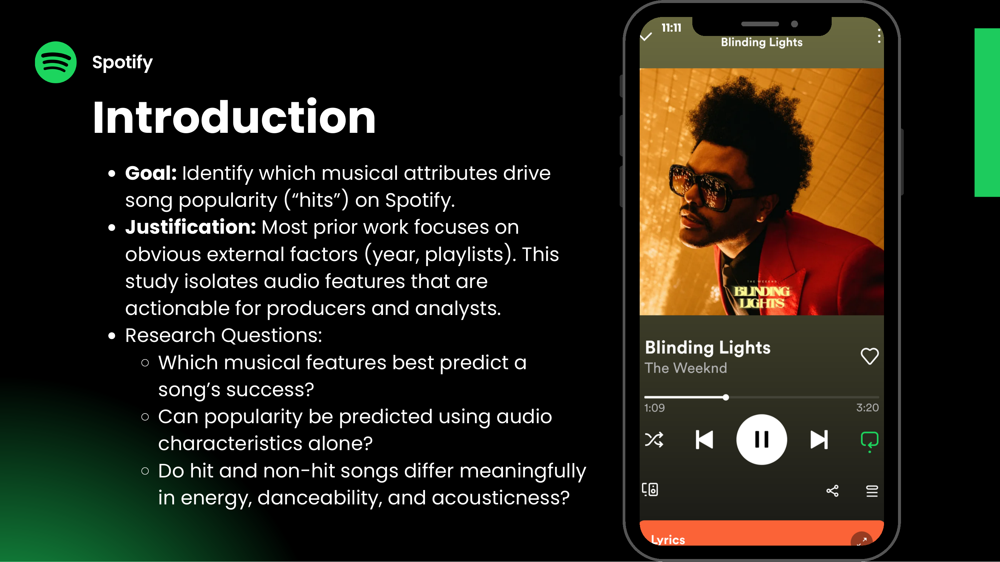
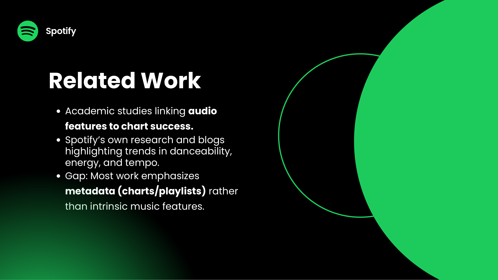
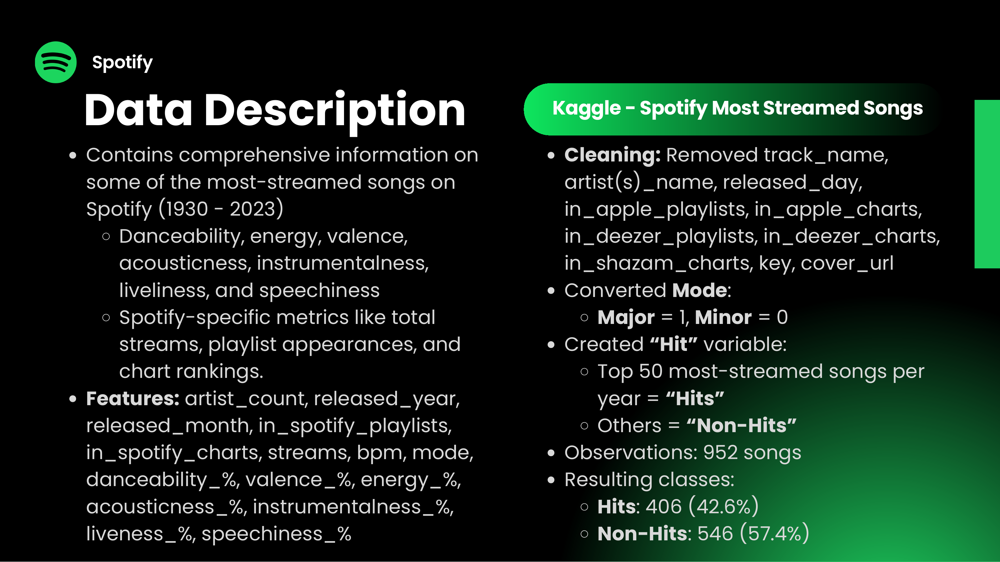
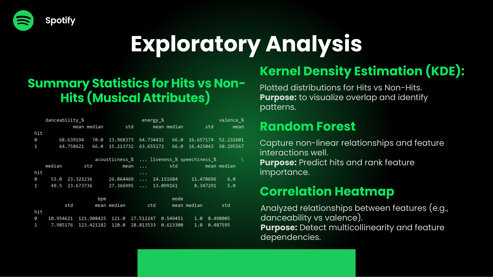
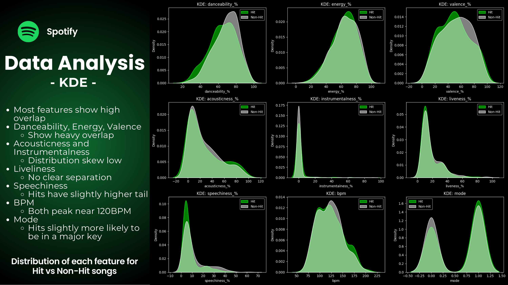
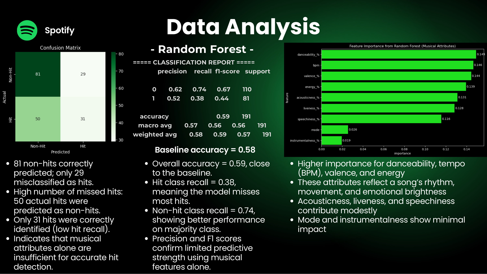
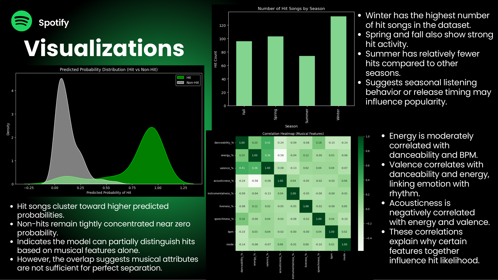
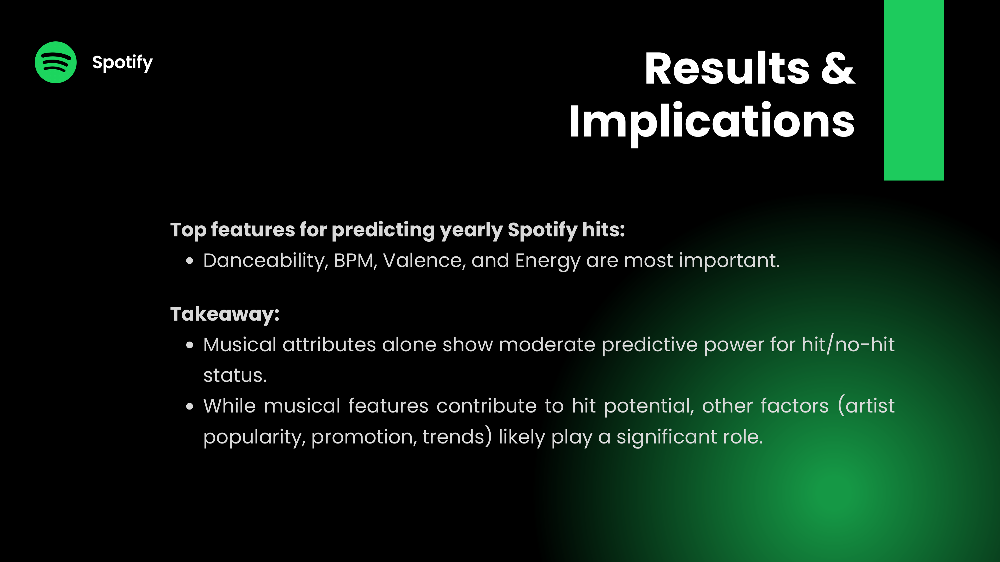
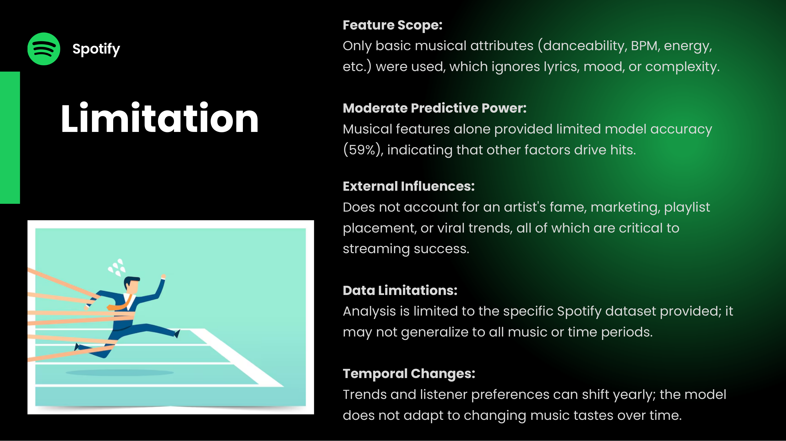

What Makes a Spotify Hit?
Identifying the musical attributes that drive song popularity on Spotify.
Streaming success can look random from the outside. We wanted to know whether a song's popularity could be explained by its audio features alone, such as danceability, energy, valence, and tempo, rather than external factors like playlists or release year. Working with a Kaggle dataset of 952 of Spotify's most-streamed songs, our team built a classifier to separate yearly “Hits” from “Non-Hits” and rank which musical attributes matter most.
Approach
We labeled the top 50 most-streamed songs each year as Hits (42.6% of the data) and the rest as Non-Hits. After cleaning identifier and external-platform columns (track name, plus Apple, Deezer, and Shazam charts and playlists) and encoding mode as major or minor, we explored the data with summary statistics, kernel density plots, and a correlation heatmap, then trained a Random Forest to predict hits and rank feature importance.
The goal was not just a single accuracy number but an honest read on how much musical attributes alone can explain, and where they fall short.
From the deck









What I learned
The clearest finding was a negative one: musical attributes alone are only moderately predictive of streaming success. The Random Forest reached 59% accuracy, barely above the 58% baseline, and missed most actual hits (recall 0.38). The KDE plots explained why: Hits and Non-Hits overlap heavily across nearly every audio feature.
Danceability, BPM, valence, and energy were the most useful signals, reflecting a song's rhythm, movement, and emotional brightness. But the gap to a strong model points to everything the audio features cannot see: artist fame, marketing, playlist placement, and viral trends. The takeaway is that intrinsic musical qualities help, yet the business of a hit is driven largely by forces outside the music itself.